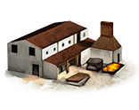
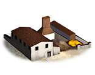
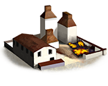
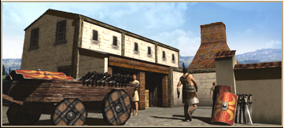
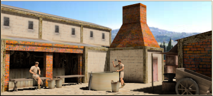
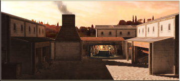

RTR: Imperium Surrectum
RTR: Imperium SurrectumWeaponsmiths
3 levels, each replacing the one before it — you upgrade in place rather than building alongside.
Blacksmith (Industry) → Armourer (Industry) → Foundry (Industry)
Pictures are the game's own building art. Where a culture ships none of its own, the game falls back to another culture's, and that is what is shown here.
Levels at a glance
| Level | Cost | Build time | Minimum settlement | Upgrades to | Level | Cost | Build time | Minimum settlement | Upgrades to | ||
|---|---|---|---|---|---|---|---|---|---|---|---|
 | Blacksmith (Industry) | 2,500 | 4 | large town | Armourer (Industry) |  | Armourer (Industry) | 4,500 | 8 | city | Foundry (Industry) |
 | Foundry (Industry) | 9,000 | 10 | large city | — |
Costs in denarii, build time in turns.
Armourer (Industry)

An armourer works closely with a blacksmith, and produces fine armour to match the smith's superior weapons.
Similarly to the ceramics of Republican Italy, there is a large degree of variation in the metalwork of the peninsula. In Etruria, metalworking was an immensely important part of society: workshops are often located within urban areas, and votive objects were almost entirely metal.
Strategy
Blacksmiths in RIS only confer weapon or armour bonuses if you have access to specific resources. The resource iron is the most useful, providing +1 to heavy (melee) attack, +1 light (melee) attack, +1 missile attack and +1 armour. If you do not have iron available you can build a single 'Iron exports' anywhere in your faction, to supply all regions with iron, meaning blacksmiths everywhere will then offer all these bonuses regardless of local iron availability. But as that is a mid game building, at first you will only get the upgrades in regions with resources. Besides iron, copper, flax and livestock give +1 armour as these were also used extensively for armour making (bronze, linen, leather armour respectively). Note that these do not stack with the iron bonus or each other, they only offer the +1. Coal meanwhile does not provide a unit upgrade by itself but when iron is available too (locally or by Iron export) it increases the bonus to heavy attack to +2, which is the only way to get such an upgrade. The plus 3's bonuses from vanilla do not exist in RIS for balance purposes. Note that you just need the resource to be the region, you don't need to build up that resource specific exploitation chain, just the blacksmith.
This building also provides income, which is increased further when coal or iron is present, or an iron supply has been built.
Special attack bonuses (for slingers and ships) do not come from the blacksmith line but from the port buildings instead(with timber or hemp).
The top tier of the blacksmith line is also where you recruit artillery from, if your faction has access to it.
Wording varies by culture: 8 versions of this description exist in the game files.
| Cost | 4,500 denarii | Build time | 8 turns | Minimum settlement | city | Upgrades to | Foundry (Industry) |
What it does
- -1 population growth (player only)
- -3 public order (happiness) (player only)
Show 6 effects that apply only in the circumstances shown
- improves simple weapons (1) — only when
iron_building_supply or resource coal - improves bladed weapons (1) — only when
iron_building_supply or resource coal - improves missile weapons (1) — only when
iron_building_supply or resource coal - improves armour (1) — only when
resource flax or resource livestock or copper_building_supply or iron_building_supply - -1 population growth — only when
building_present_min_level smith smiths_workshop and not is_player - -3 public order (happiness) — only when
building_present_min_level smith smiths_workshop and not is_player
Recruitment — unlocks 2 units. Which of them you can actually raise depends on your faction, your government and the region, exactly as the game files state it.
- Ballistas (3 experience)
- Lithoboloi (3 experience)
Blacksmith (Industry)

A blacksmith provides superior quality weaponry for any troops trained in the settlement. This building can be developed further.
Starting small-scale, the blacksmith provides superior quality weaponry for any troops trained in the settlement. His skills in metal working are exceptional, far beyond those of ordinary smiths. He is an important man in the community, as good weapons are always valued by men who use them. A Blacksmith who can make a strong sword that won't break in combat is a great asset to his people.
Strategy
Blacksmiths in RIS do not confer weapon or armour bonuses without access to specific resources. Iron is most useful, providing +1 to heavy (melee) attack, +1 light (melee) attack, +1 missile attack and +1 armour. Without local iron, you can build a single 'Iron exports' anywhere in your faction to supply all regions with iron. Besides iron, copper, flax and livestock all give +1 armour as they were used extensively for armourmaking (bronze, linen, leather armour respectively). These do not stack with the iron bonus or each other. Coal does not provide a unit upgrade by itself, but when iron is available too, it increases the heavy attack bonus to +2 - the only way to get that high an upgrade.
Note that you just need the resource in the region, you don't need to build up that resource's specific exploitation chain, just the blacksmith. This building also provides income, increased further when coal or iron are present, or an iron supply has been built. Special attack bonuses (for slingers and ships) come from the port buildings instead (with timber or hemp). The top tier is also where you recruit artillery from, if your faction has access to them.
Wording varies by culture: 2 versions of this description exist in the game files.
| Cost | 2,500 denarii | Build time | 4 turns | Minimum settlement | large town | Upgrades to | Armourer (Industry) |
What it does
- -1 population growth (player only)
- -2 public order (happiness) (player only)
Show 6 effects that apply only in the circumstances shown
- improves simple weapons (1) — only when
iron_building_supply or resource coal - improves bladed weapons (1) — only when
iron_building_supply or resource coal - improves missile weapons (1) — only when
iron_building_supply or resource coal - improves armour (1) — only when
resource flax or resource livestock or copper_building_supply - -1 population growth — only when
building_present_min_level smith blacksmith and not is_player - -2 public order (happiness) — only when
building_present_min_level smith blacksmith and not is_player
Foundry (Industry)

The industries of this province are manifold, and well-regulated by you now, O Patres Conscripti. Their wealth shall surely enrich the urbs itself.
A foundry is the final metalworking development found only in larger cities: a factory where very high quality armour and weaponry can be produced quickly, and in quantity. Any troops trained here will be equipped to the highest standard possible, making them formidable in combat, provided they are well motivated and properly commanded!
Strategy
Blacksmiths in RIS do not confer weapon or armour bonuses without access to specific resources. Iron is most useful, providing +1 to heavy (melee) attack, +1 light (melee) attack, +1 missile attack and +1 armour. Without local iron, you can build a single 'Iron exports' anywhere in your faction to supply all regions. Besides iron, copper, flax and livestock all give +1 armour as they were used for armourmaking (bronze, linen, leather respectively). These do not stack with the iron bonus or each other. Coal does not provide a unit upgrade by itself, but when iron is available too, it increases the heavy attack bonus to +2 - the only way to get that high an upgrade.
Note that you just need the resource in the region, you don't need to build up that resource's exploitation chain, just the blacksmith. This building also provides income, increased when coal or iron are present, or an iron supply has been built. Special attack bonuses (for slingers and ships) come from the port buildings instead (with timber or hemp). The top tier is also where you recruit artillery from, if your faction has access to them.
Wording varies by culture: 3 versions of this description exist in the game files.
| Cost | 9,000 denarii | Build time | 10 turns | Minimum settlement | large city |
What it does
- +2 trade income
- -2 population growth (player only)
- -4 public order (happiness) (player only)
Show 10 effects that apply only in the circumstances shown
- improves simple weapons (1) — only when
iron_building_supply and not resource coal - improves simple weapons (1) — only when
not iron_building_supply and resource coal - improves simple weapons (2) — only when
iron_building_supply and resource coal - improves bladed weapons (1) — only when
iron_building_supply and not resource coal - improves bladed weapons (1) — only when
not iron_building_supply and resource coal - improves bladed weapons (2) — only when
iron_building_supply and resource coal - improves missile weapons (1) — only when
iron_building_supply or resource coal - improves armour (1) — only when
resource flax or resource livestock or copper_building_supply or iron_building_supply - -2 population growth — only when
building_present_min_level smith foundry and not is_player - -4 public order (happiness) — only when
building_present_min_level smith foundry and not is_player
Recruitment — unlocks 3 units. Which of them you can actually raise depends on your faction, your government and the region, exactly as the game files state it.
- Ballistas (3 experience)
- Large Lithoboloi (3 experience)
- Lithoboloi (3 experience)
What the shorthands in those conditions stand for (2)
These are the mod's own, quoted from the game files unchanged.
| Shorthand | Stands for | Shorthand | Stands for | ||||
|---|---|---|---|---|---|---|---|
copper_building_supply | resource copper or hidden_resource copper_supply_built factionwide | iron_building_supply | resource iron or hidden_resource iron_supply_built factionwide |